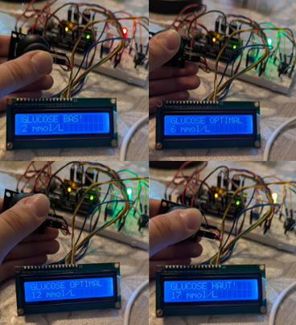
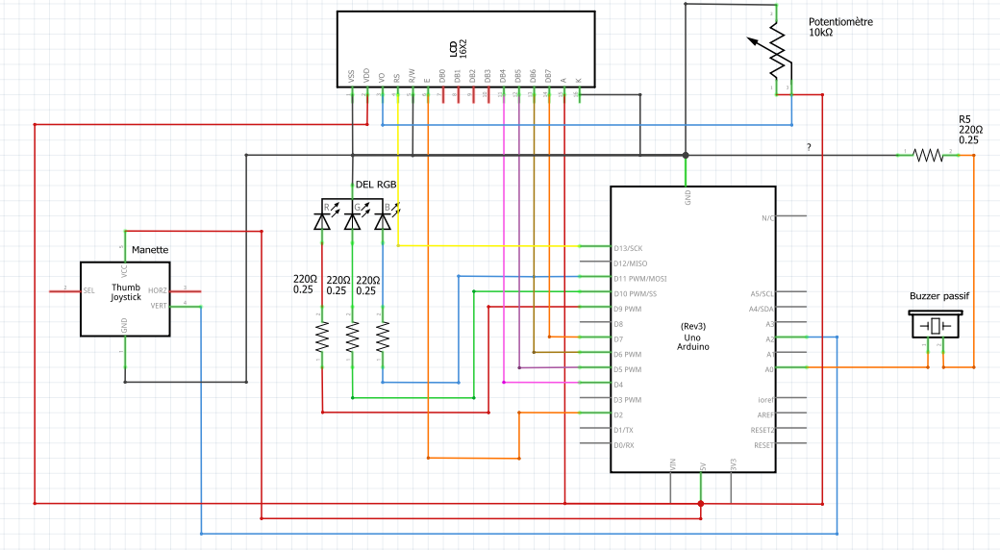
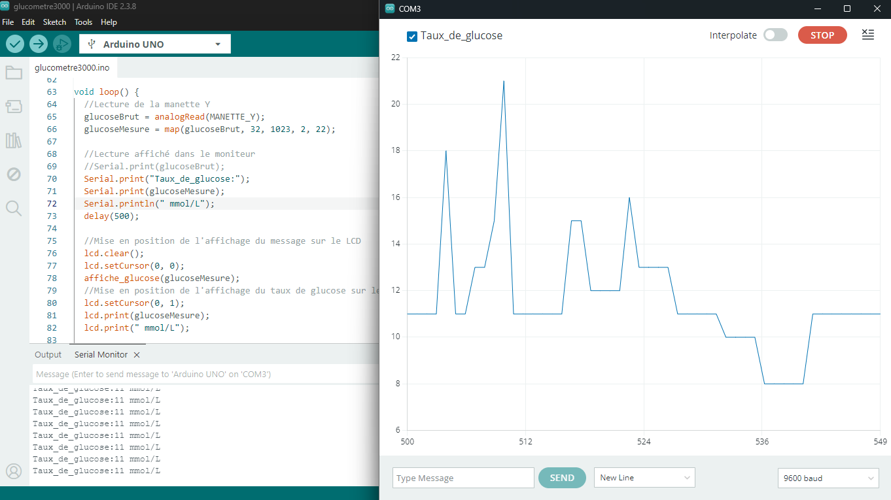

Cette année, j'ai fait un projet qui consiste à faire un montage Arduino qui est signifiant pour moi. Mon projet représente un glucomètre amélioré et qui sera utile pour les personnes qui gèrent leur diabète comme moi et ont besoins d'un outil pour rendre la vie plus comfortable. J'ai utilisé une manette afin de simuler la mesure du glucose et afin de simuler une réponse dans le système, j'ai utilisé une diode électroluminescente multicolor pour émettre une lumière constante, un buzzer passif pour une alarme, et un LCD pour afficher un message et la mesure dépendamment du niveau de glucose. Ces composantes change selon le taux de glucose mesurer et alerte l'utilisateur lorsqu'il y a une baisse ou un augmentation de glucose.
Pour simuler la mesure du glucose, je convertit la valeur numérique du potentiomètre sur l'axe des y de la manette en taux de glucose en utilisant la fonction map.
C'est un conversion entre la tension de la manette et les mmol/L et j'ai utilisé des conditions if pour déterminer si la mesure représente un LOW ou un HIGH.
Ensuite, la DEL s'allume vert si le niveau est optimal, rouge si le niveau est en-dessous de 4mmol/L (LOW) ou jaune si le niveau est au-dessus de 15mmol/L (HIGH).
Le buzzer passif joue une mélodie différente pour un high ou pour un low ce qui permet à l'utilisateur d'identifier rapidement le niveau de glucose sans voir le chiffre et c'est aussi utile pour les personnes qui ont des troubles de vision.
J'ai utilisé l'accord D mineur pour indiquer un ton alarmant et frustrant et j'ai composé deux mélodies en utilisant les fréquences des notes de l'accord et en multipliant ou divisant par 2 les fréquences pour changer d'octave.
L'écran LCD affiche sur la première ligne l'état du niveau de glucose de la personne (GLUCOSE HAUT, GLUCOSE OPTIMAL, GLUCOSE BAS) et le niveau numérique en mmol/L sur la deuxième ligne.


Enfin, j'ai aussi affiché les valeurs du niveau de glucose en utilisant le Serial plotter du Arduino pour observer le taux de glucose de la personne. L'image montre aussi le schéma que j'ai dessiné pour planifier le projet et organiser les composantes dans Fritzing.
Durant la réalisation de ce projet, j'ai appris comment fair une mélodie avec un buzzer en manipulant la fréquence des notes et comment augmenter d'octave en multipliant par 2, comment utiliser un LCD, comment utiliser le Serial plotter dans Arduino. J'ai aussi appris comment réaliser un grand projet avec plusier composante et comment m'assurer que chaque composante reçois le montant de tension qu'elle a besoin pour fonctionner.